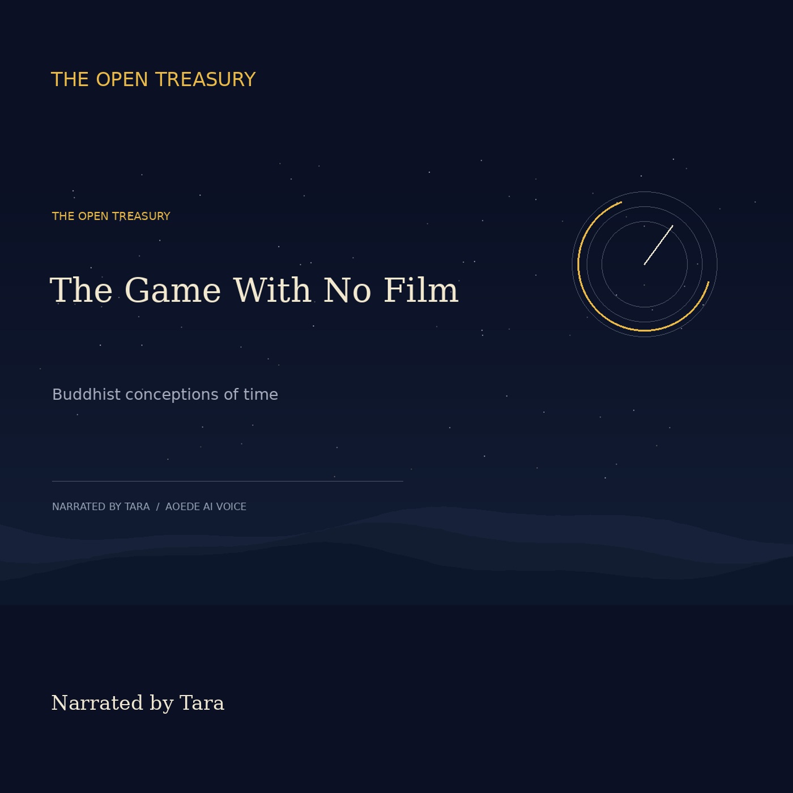

The Game With No Film
Buddhist conceptions of time, from the inside out. Moments and the great Abhidharma debate over whether the past exists. Dharmakirti's rule that to be real is to cause, and how a game with no surviving film can still be known. Vasubandhu's dream, Nagarjuna's examination of time, Huayan's ten times, Dogen's being-time, the Kalachakra wheel, and Dzogchen's fourth time. Then the honest conversation: McTaggart, Husserl's melody, Bergson and Einstein, and what modern physics does and does not show. No time-substance anywhere; sequence fully real. Why Wilt still played before Jordan.
Original script and narration: CC0 1.0 Universal. Short credited quotations retain their own rights and are not relicensed. Script and narration: Tara (The Open Treasury) Short quotations: Augustine, Confessions, Book XI (trans. J. G. Pilkington, public domain); Isaac Newton, Principia, scholium on time (1729 translation, public domain); Dogen, Uji (short lines, trans. Kazuaki Tanahashi and Philip Kapleau); Longchenpa on the four times (short lines, trans. Herbert Guenther, via Zhihua Yao, "Four-Dimensional Time in Dzogchen and Heidegger"). Bill Campbell's WCAU radio call of March 2, 1962 (US National Recording Registry, Library of Congress). Nagarjuna, Fundamental Verses on the Middle Way, chapter 19, verses rendered from the Sanskrit by Tara.
Synthetic Aoede narration. Automated transcript checks, not a human listen-through or expert review. Final master independently decoded and measured before publication. Transcription checks cannot certify every pronunciation or small audible artifact.
Support is never expected; if you enjoy the Treasury, a voluntary dana at buymeacoffee.com/joematten helps keep it going.
Chapters
- 00:00 Introduction: The Game With No Film
- 02:15 The puzzle in one lifetime
- 04:32 Moments, and the game of the four masters
- 07:59 Dharmakirti: to be is to cause
- 11:20 Vasubandhu, and the dream of place and time
- 13:27 Nagarjuna: time under the knife
- 17:16 Huayan: the ten times
- 19:52 Dogen: being time
- 23:16 Kalachakra: the wheel of time
- 25:26 Dzogchen: the fourth time
- 28:06 The Western witnesses
- 32:18 Physics, honestly
- 36:15 Conclusion: The game still counts
Watch the moving edition
YouTube: original symbolic moving edition
Read alongside the episode
Complete prepared spoken script
Credits and source notes
Download MP3